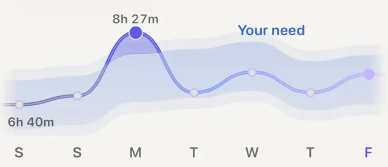

Ratgeber
Meistens ja, nur lockerer. Eine einzelne kurze Nacht ist selten ein Grund für einen Ruhetag, aber ein guter Grund, die harte Einheit zu verschieben. Richtung Pause kippt die Entscheidung erst, wenn zur schlechten Nacht noch etwas dazukommt: ein Ruhepuls über deinem Üblichen, eine niedrigere Herzfrequenzvariabilität (HRV) als sonst, eine harte Trainingswoche oder irgendetwas, das sich nach Krankwerden anfühlt.
Entscheidend ist das Wort dein. Ein Ruhepuls von 58 ist für die eine Läuferin entspannt und für den anderen Läufer hoch. Jedes der Signale unten sagt nur etwas, wenn du es an deinem eigenen üblichen Bereich misst.
Fullagar und Kollegen (2015) haben die Forschung zu Schlafmangel und Sport zusammengefasst. Die Effekte sind kleiner, als viele befürchten, und sie sind ungleich verteilt. Stimmung, Konzentration und wie schwer sich eine Belastung anfühlt, leiden recht zuverlässig. Lange, gleichmäßige Belastungen leiden eher als eine kurze Maximalleistung. Craven und Kollegen (2022) haben die Studien zu akutem Schlafverlust gemeinsam ausgewertet: Im Schnitt sank die körperliche Leistung mäßig, mit großen Unterschieden zwischen den Studien und zwischen den Menschen.
Nach einer kurzen Nacht fühlt sich dasselbe Tempo einfach schwerer an.
Für einen normalen Trainingstag heißt das:
Der Schlaf ist nur die eine Hälfte des Morgenbilds. Die andere ist das, was dein Herz gemacht hat, während du geschlafen hast.
Plews und Kollegen (2013) haben auf Basis von Daten aus dem Ausdauer-Spitzensport dafür plädiert, die HRV als gleitenden Wochenschnitt gegen den eigenen Ausgangswert zu lesen, statt auf einen einzelnen Morgen zu reagieren, weil die Tageswerte stark schwanken. Aus demselben Grund ist ein einzelner merkwürdiger Wert kein Urteil.
Es gibt auch Belege dafür, dass es sich lohnt, auf diese Signale zu achten. Bei Kiviniemi und Kollegen (2007) verbesserten sich Männer, die nur dann hart trainierten, wenn ihre HRV nicht gefallen war, und sonst locker liefen oder pausierten, stärker als eine Gruppe mit festem Plan. Vesterinen und Kollegen (2016) fanden bei Freizeitläufern über acht Wochen Ähnliches: Ein Plan, der sich nach der HRV gemessen am eigenen Ausgangswert richtete, schnitt mindestens so gut ab wie ein fester Plan. Die Lehre ist nicht, dass eine Zahl es besser weiß. Sondern dass Rausnehmen an belasteten Tagen und Gasgeben an frischen Tagen mindestens so gut funktioniert wie ein Kalender. Warum der Vergleich mit dir selbst zählt: warum eine Uhr dich mit dir selbst vergleichen sollte (auf Englisch).
Eine gute Gewohnheit an jedem unsicheren Morgen: locker loslaufen und nach zehn Minuten in dich hineinhorchen. Sind die Beine schwer, ist der Puls für das Tempo ungewöhnlich hoch oder fühlt sich die Belastung falsch an, bleib locker oder dreh um. Du verlierst dabei so gut wie nichts. Wenn du den Lauf am Ende ausfallen lässt, hilft soll ich ein verpasstes Training nachholen? (auf Englisch) beim Weitermachen.
Die schlechte Nacht ist nur eine Spalte, nicht die ganze Antwort.

Deine Nächte gegen deinen BedarfDer Schlaf-Tab von Aera zeigt deine letzten sieben Nächte vor dem Schlafbedarf, den Aera aus deinen eigenen Nächten gelernt hat. So siehst du auf einen Blick, ob es eine kurze Nacht war oder schon eine Reihe.
Aera, für iPhone und Apple Watch
Aera nimmt dir diese Abwägung jeden Morgen ab. Die App liest deinen Schlaf der letzten Nacht, deine nächtlichen Herzwerte und deine vergangene Woche aus Apple Health, misst alles an deinem eigenen Üblichen und gibt dem Tag ein klares Wort: Ruhetag, Ruhig angehen, Bereit oder Leg los, mit den Gründen daneben. Dafür braucht Aera zuerst ein paar Wochen deiner Nächte und Einheiten; bis dahin sagt die App, dass sie noch lernt.
Hinter jeder Zahl steckt ein Artikel im Field Guide, der zeigt, wie sie berechnet wurde und wo sie nicht mehr verlässlich ist. Es gibt kein Konto, und deine Gesundheitswerte werden auf deinem iPhone berechnet. Die Empfehlung am Morgen ist kostenlos. Ebenfalls kostenlos: ein Routenplaner, der echten Wegen folgt, mit Abbiegehinweisen auf dem iPhone oder der Apple Watch.
Aera ist kein Medizinprodukt. Die Uhr schätzt die Schlafphasen nur, deshalb zählen sie weniger, und Aera sagt das auch.
Meistens ja, aber locker. Eine einzelne kurze Nacht ist selten ein Grund für einen Ruhetag, aber ein guter Grund, Intervalle oder eine Einheit im Wettkampftempo gegen einen lockeren Lauf zu tauschen. Ruh dich lieber aus, wenn du Anzeichen einer Erkrankung hast oder wenn zur kurzen Nacht ein Ruhepuls über deinem Üblichen, eine niedrigere HRV als üblich und eine harte Woche dazukommen.
Meistens keins von beiden. Behalte den Lauf und nimm die Intensität raus: Ein kürzerer Lauf in Plaudertempo erfüllt seinen Zweck trotzdem. Lass ihn ausfallen, wenn du dich krank fühlst, Fieber oder Beschwerden in der Brust hast oder wenn mehrere Signale schon an mehr als einem Morgen daneben liegen.
Gemessen an deinem eigenen Üblichen, dass dein Körper in der Nacht mehr arbeiten musste als sonst. Hartes Training, Alkohol, ein spätes Essen, Hitze, Stress, eine kurze Nacht oder eine beginnende Erkrankung können das auslösen. Ein einzelner Morgen ist oft Rauschen, mehrere Morgen hintereinander solltest du ernst nehmen.
Die Schlafdauer und wie unruhig die Nacht war, sind die verlässlicheren Teile. Die Schlafphasen schätzt die Uhr aus Bewegung und Puls, sie misst nicht dein Gehirn. Entscheide einen Trainingstag also nicht allein nach den Minuten Tief- oder REM-Schlaf.
Verwandte Notizen (auf Englisch): was ein Readiness-Wert bedeutet · wie viel Schlaf du wirklich brauchst · was Zone-2-Training ist
Verwandter Ratgeber: Laufroute planen: so geht's